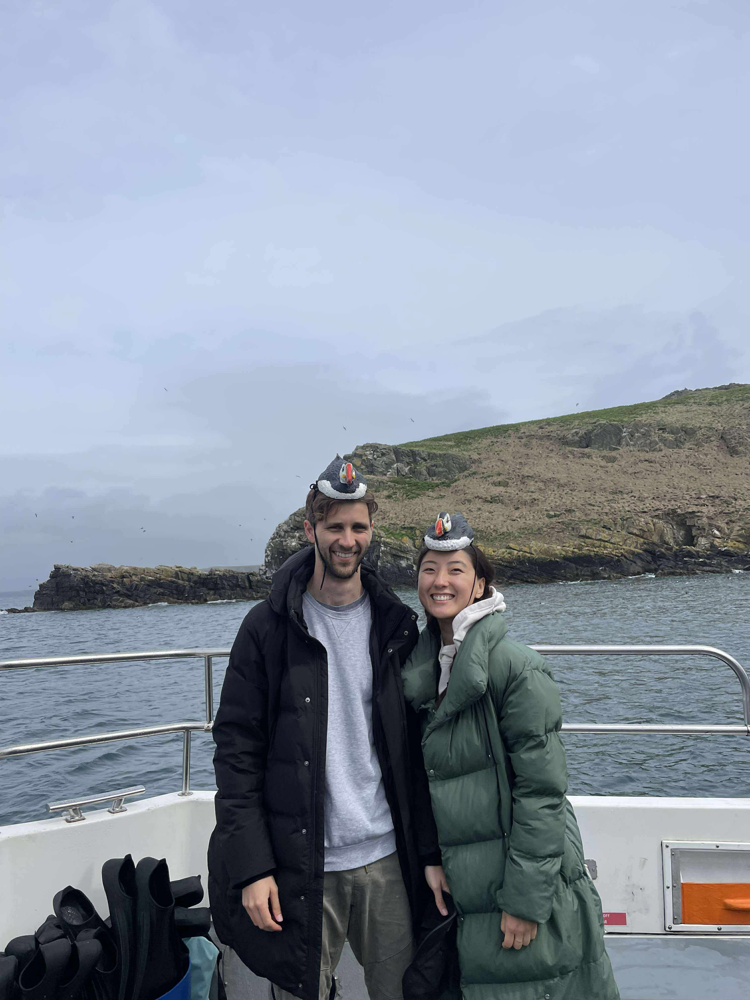
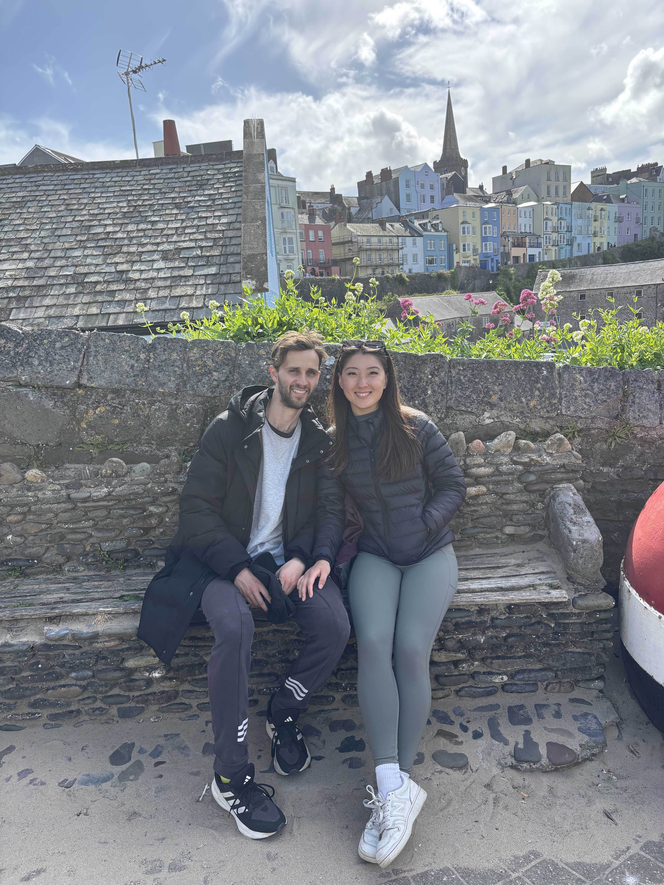
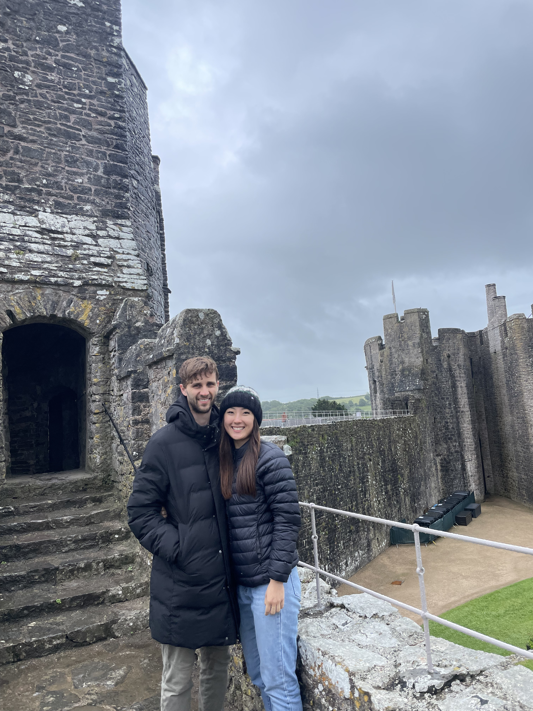
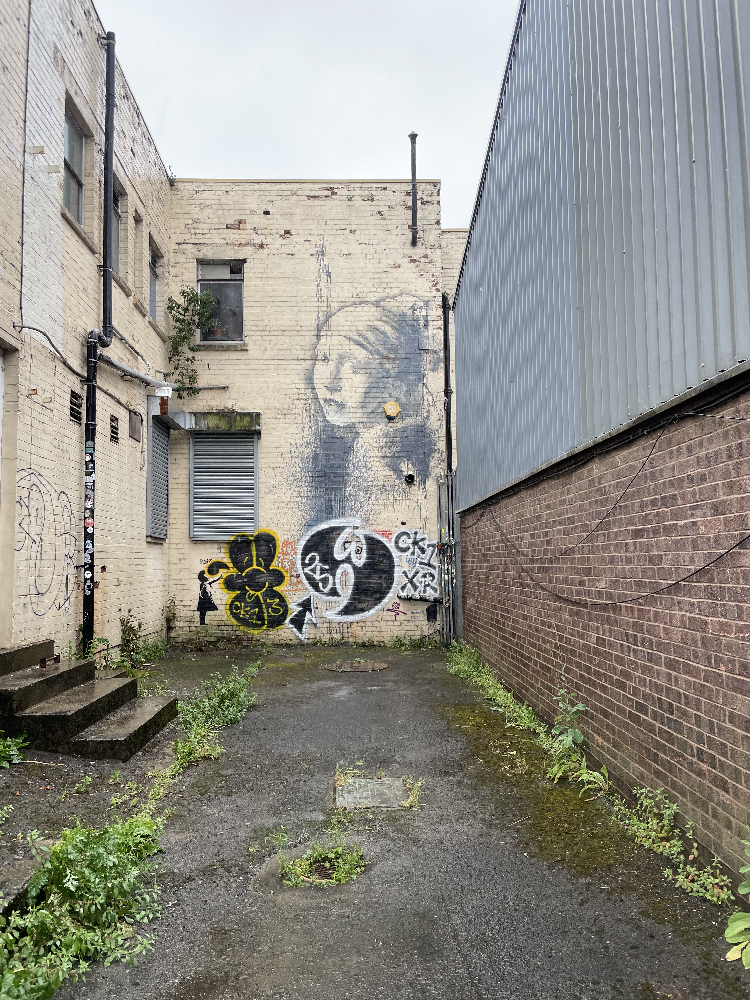

We joined with Esther and Dennis to say hello to some Welsh puffins. Unfortunately, we were woefully unprepared for the Welsh weather...

24th May 2025
We started out our long car trip from London to Pembrokeshire in Swiss Cottage. We sped through the journey as our snorkelling had been moved to that afteenoon at 3pm. We only had a quicm stop off somewhere along the way to fill our bellies with a Whopper meal... After around 6 hours of driving we arrived a little worse for wear at a bay off the Welsh coast. We popped some sea sickness tablets and headed across to Skomar Island. There were about 43000 puffins circling the island and our boat floated almost alongside them. We awaited with anticipation as the wind whipped up a swell and the clouds covered away the sun. Our guides pulled out thick wetsuits and we warmed ourselves before plunging into the 13 degree water. Slightly more choppy than exprcted, we swam over to the colony of puffins. As we approached, we coyly averted our eyes and avoided sudden movements to keep the puffins from fleeing. Unfortunately, we didnt have too much success grtting amongst them but we did get to see the puffins from a few meters away, and had them swooping clumsily just above our heads. Sophie was having a slightly harder time with the choppier waters but was bravely hanging in there to stay close to the puffins. We moved across the other side of the bay where we saw nesting birds and their chicks up close. We even spotted some crabs lurking close to the cliffs underwater. Finally, with the help of a decoy puffin I was able to get amongst a flock of puffins. As I ducked my head under the water I was astounded to see this silvery puffin gluding throufh the water, looking much more at ease than on land or in the air. It was finally time to make our way back to the boat for some warming hot chocolate and change into warm clothes. On the way back we crossed over the NAME where two currents meet and push water to the surface. It pushes wildlife to the surface but also makes for a choppy ride. We got back to the car and made our way to the airbnb in Pembroke. It is a small town but charming with a large river flowing through it. Our place sat on the river opposite the Pembroke castle. We took dinner at a local pub before crashing out into bed after a tiring day.

25th May 2025
We woke up to a bright and sunny day, in stark contrast to uesterdays weather. To make the most of the weather we drove down to the Bosherton ponds where a trail took us to a Welsh beach which was full of locals swimming and enjoying the sun, despite it being freezing cold and super windy. We circled back and saw a swan family gliding in the ponds. We crossed a rather perilous one lane bridge with no handrails and returned to the car for our next adventure to Tenby. But before reaching Tenby, we stopped off at a farm house for some lunch where we got up close and personal with horses, lambs, pigs and chickens! Tenby was a beutiful town situated on the South coast of Wales and, with the sun shining, we took a stroll inside the castle wall ruins which surrounded the town. We saw the somewhat abandoned castle island which was inaccessible during the current high tide and strolled along the beach below the colourful houses. We finished off the day with a traditional pub dinner at the Stackpole Inn before nodding off for the night.

26th May 2025
Our first stop of the day was Freshwater West. When we arrived we headed straight for the grave of Dobby. Thousands of stones had been piled up in memory of the house elf, even a few socks had been laid down. We said our farewells and I decided to take a dip in the freezing ocean water which was surprisingly invigorating. Back in town we refuelled with some pizza before exploring Pembroke castle. The history was fascinating as we explored the castle keep, dungeon, banquet hall and hidden cave which potentially has some of the best preserved artefacts in all of Britain. For our last night in Wales we went across the road from our appartment to the local watering hole where we dined next to a river housing a murderous swan. Although we didn't see the swan, we left satisfied and full from a lovely meal.

27th May 2025
We woke up and started our journey back to London but not before making a few stops along the way. Our first stop off was Cardiff to grab our magnet! We passed by a castle situated in the centre of Cardiff but didn't have the time to chck it out. However, we did have time to get a fish and chip flavoured hard candy which was immediately rejected by Sophie. We moved on to Bristol for some Italinan lunch. We also spent some time searching for some Banksy artworks! We found a grim reaper painted on the side of a ship and we navigated the windy streets to find the girl with the earring. Unfortunately we were pressed for time and so drove off to return the car.